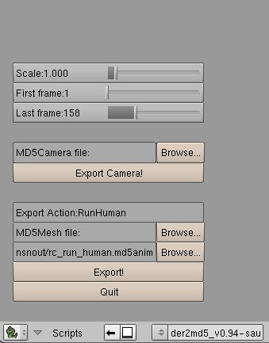

Hello again folks. Geartrooper here. If you've followed along the md3 tutorials using the md5 format will be a breeze. Just remember to have ONLY the meshes you wish to export in your .blend file, else you'll get a lot of meshes you didn't want ingame. The exporter
blendermd5_2_09.zip[updated 2/21/09, header by VerbalShadow] which also contains the md5 importer should be extracted to your .blender/scripts folder. The interface is self explanatory;

You must name the mesh file NAME.md5mesh and the animation file NAME.md5anim. For sanity's sake I name the individual animation files 'run.md5anim' and 'idle.md5anim'. Use what suits you best. As with md3 remember to rotate the model [r] [90] [-] before export. If you are importing models I suggest changing the Scale factor to a lower number than the default Scale:1.000. Otherwise you will see giant bones over your mesh. The cfg for md5 files is similiar to the md3 format. Just stay posted and check the wiki for default commands.